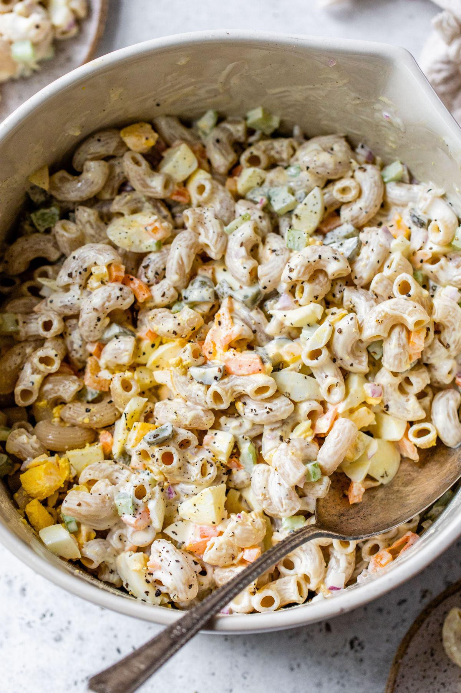

Healthy Macaroni Salad
This deliciously creamy deli-style Healthy Macaroni Salad Recipe is loaded with elbow macaroni, red onion, bell pepper, pickles, and hard-boiled eggs; all tossed in a creamy, flavorful dressing. The only side dish you’ll need for summer barbecues, parties, or get-togethers and also perfect for meal prep!

Is anyone else a fan of barbecues and cookouts solely for all of the side dishes?! I can’t get enough of the pasta salad, broccoli salad, potato salad, and even deviled eggs! For me, the side dishes are the star of the show! And I am pleased to report this healthy macaroni salad turned out SO good. It’s rich, and creamy, with the perfect amount of tang from the dressing and crunch from the veggies.
This will be your new favorite side dish to make during the summer! It goes great with burgers, chicken sausage, or grilled chicken. It is also a great dish to make ahead of time and only takes 15 minutes to prep!
Ingredients needed
There are a lot of different ways to make a macaroni salad, but this way is pretty classic, with no crazy ingredients, just simple and delicious flavors! Here’s everything you’ll need:
- Pasta – Use your favorite type of pasta! I am using gluten-free brown rice elbow noodles but you can also try a lentil or bean pasta for the extra protein or go with a more traditional macaroni
- Vegetables – Red onion, celery, bell pepper (use red, yellow, and/or orange), and gherkins pickles are added for crunch!
- Hard-boiledd egg – Many macaroni salad recipes don’t include eggs, but I love the texture (and added protein!) they add to the salad.
- Mayonnaise & Greek yogurt – I love using a combination of mayonnaise and Greek yogurt as the base of the dressing. If preferred, you can use all mayo or all Greek yogurt.
- Red wine vinegar – You can also use white wine vinegar or apple cider vinegar.
- Honey – Just a teaspoon! I find this little bit is enough to round out the flavors of the dressing.
- Dijon Mustard – For a subtle spiciness that pairs well with the other flavors.
- Garlic – Because don’t ALL dishes need a little garlic?
- Salt & pepper – To bring all of the flavors together.
How to make this recipe
Macaroni salad is one of the easiest recipes to toss together. The most time-consuming part about making this side dish is cutting up all the vegetables.
- Boil pasta. Cook macaroni according to package instructions until al dente. Drain well and drizzle with a teaspoon of extra virgin olive oil so the noodles don’t stick together.
- Combine salad ingredients. In a large bowl, combine macaroni, red onion, celery, bell pepper, pickles, and eggs. Set aside.
- Make dressing. In a spouted cup or medium bowl, combine mayo, Greek yogurt, red wine vinegar, honey, dijon mustard, garlic, salt, and pepper. Whisk until well combined.
- Assemble. Pour the dressing over the macaroni salad and gently toss until everything is well combined. Enjoy immediately or cover and chill until ready to serve.
Return Home